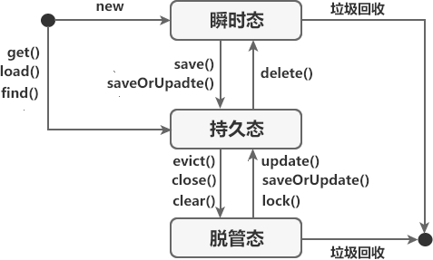

Hibernate持久化类详解
持久化类（Persistent Object ）简称 PO，在 Hibernate 中， PO 是由 POJO（即 java 类或实体类）和 hbm 映射配置组成。
简单点说，持久化类本质上就是一个与数据库表建立了映射关系的普通 Java 类（实体类），例如 User 类与数据库中 user 表通过映射文件 User.hbm.xml 建立了映射关系，此时 User 就是一个持久化类。
在 Hibernate 运行时，持久化对象的三种状态可以通过 Session 接口提供的 一系列方法进行转换。这三种状态之间的转换关系具体如下图。
通过上图可知，持久化对象的状态转换遵循以下规则：
简单点说，持久化类本质上就是一个与数据库表建立了映射关系的普通 Java 类（实体类），例如 User 类与数据库中 user 表通过映射文件 User.hbm.xml 建立了映射关系，此时 User 就是一个持久化类。
持久化类的规范
持久化类需要遵守一定的规范，具体如下：- 持久化类中需要提供一个使用 public 修饰的无参构造器；
- 持久化类中需要提供一个标识属性 OID，与数据表主键字段向对应，例如实体类 User 中的 id 属性。为了保证 OID 的唯一性，OID 应该由 Hibernate 进行赋值，尽量避免人工手动赋值；
- 持久化类中所有属性（包括 OID）都要与数据库表中的字段相对应，且都应该符合 JavaBean 规范，即属性使用 private 修饰，且提供相应的 setter 和 getter 方法；
- 标识属性应尽量使用基本数据类型的包装类型，例如 Interger，目的是为了与数据库表的字段默认值 null 保持一致；
- 不能用 final 修饰持久化类。
持久化对象
“持久化对象”就是持久化类的实例对象，它与数据库表中一条记录相对应，Hibernate 通过操作持久化对象即可实现对数据库表的 CRUD 操作。在 Hibernate 中，持久化对象是存储在一级缓存中的，一级缓存指 Session 级别的缓存，它可以根据缓存中的持久化对象的状态改变同步更新数据库，这里了解即可，我们会在后面的 Hibernate 一级缓存中详细介绍。
持久化对象的状态
Hibernate 是一款持久层的 ORM 框架，专注于数据的持久化工作。在进行数据持久化操作时，持久化对象可能处于不同的状态当中，这些状态可分为三种，分别为瞬时态、持久态和脱管态，如下表。| 状态 | 别名 | 产生时机 | 特点 |
|---|---|---|---|
| 瞬时态（transient） | 临时态或自由态 | 由 new 关键字开辟内存空间的对象（即使用 new 关键字创建的对象） |
|
| 持久态（persistent） | - | 当对象加入到 Session 的一级缓存中时，与 Session 实例建立关联关系时 |
|
| 脱管态（detached） | 离线态或游离态 | 持久态对象与 Session 断开联系时 |
|
在 Hibernate 运行时，持久化对象的三种状态可以通过 Session 接口提供的 一系列方法进行转换。这三种状态之间的转换关系具体如下图。

图1：Hibernate 持久化对象状态转化图
图1：Hibernate 持久化对象状态转化图
通过上图可知，持久化对象的状态转换遵循以下规则：
- 当一个实体类对象通过 new 关键字创建时，此时该对象就处于瞬时态。
- 当执行 Session 接口提供的 save() 或 saveOrUpate() 方法，将瞬时态对象保存到 Session 的一级缓存中时，该对象就从瞬时态转换为了持久态。
- 当执行 Session 接口提供的 evict()、close() 或 clear() 方法，将持久态对象与 Session 断开关联关系时，该对象就从持久态转换为了脱管态。
- 当执行 Session 接口提供的 update()、saveOrUpdate() 方法，将脱管态对象重新与 Session 建立关联关系时，该对象会从脱管态转换为持久态。
- 直接执行 Session 接口提供的 get()、load() 或 find() 方法从数据库中查询出的对象，是处于持久态的。
- 当执行 Session 接口提供的 delete() 方法时，持久态对象就会从持久态转换为瞬时态。
- 由于瞬时态和脱管态对象都不在 Session 的管理范围内，因此一段时间后，它们就会被 JVM 回收。
关注公众号「站长严长生」，在手机上阅读所有教程，随时随地都能学习。内含一款搜索神器，免费下载全网书籍和视频。

微信扫码关注公众号